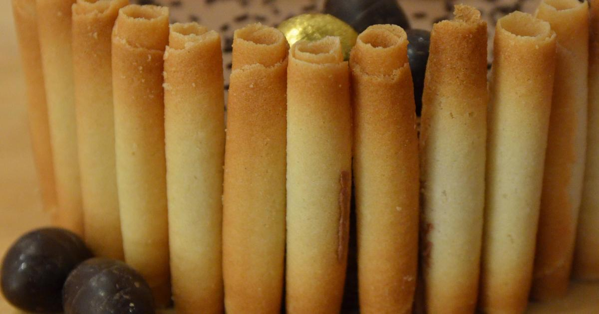
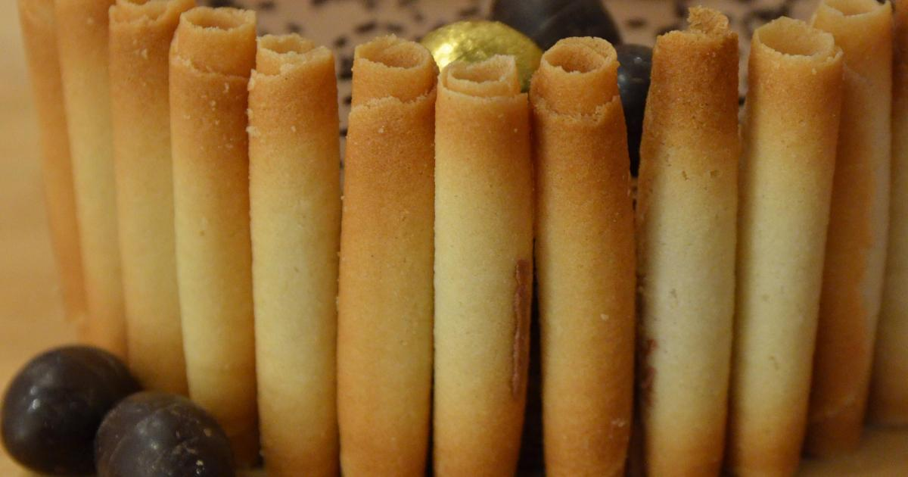

Recette selection Confitures
2021.03.26 23:02

ZdNIOtdPNBbUsL60Lb42d 1616792924799 OFFRE ABO PÂQUES : 6 numéros du magazine + 1 moule à chocolat OFFERT pour 19,90€ Connexion Inscription Découvrez des recettes personnalisées en créant votre profil Marmiton Recettes par catégories Idées recettes Aller plus loin Mes aides à la cuisine Communauté Abonnez-vous Recettes par catégories Apéritifs Entrées Plats Desserts Boissons Petit-déj/brunch Idées recettes Qu'est-ce qu'on mange ce soir ? Menu de la semaine Recettes de saison Recettes par thème Recettes par ingrédient Top des recettes Les grands classiques Nouveautés Proposer une recette Aller plus loin Mieux manger Mieux acheter Bon plans Mes aides à la cuisine Table de conversion Mon Frigo Techniques en vidéos Communauté Participer au forum Devenir testeur Abonnez-vous Marmiton magazine Newsletters
Accueil / Sélections de recettes / Confitures
Recette selection Confitures
Avec de la confiture Chutneys et confitures salées Confitures Des fruits (voire légumes), du sucre, des bocaux... à partir de là il y a tellement de variantes possibles pour les confitures que seuls votre goût et vos envies pourront vous aider à choisir. Mais on a quand même pensé à vous aider en sélectionnant pour vous des recettes. Confitures, gelées, chutney et marmelades à déguster à tout moment !Cerise sur le gâteau, comme la confiture est aussi un ingrédient, retrouvez également des recettes où l'utiliser.
Faire de la confiture ? Vous n'allez plus pouvoir vous en passer.
NB: ATTENTION, certains conseillent parfois de retourner les pots pour les stériliser... Cette méthode est très dangereuse étant donné les risques de brûlures graves qu'elle entraine !
Afin de vous aider à préparer de délicieuses confitures maison, voici quelques ustensiles indispensables à avoir dans sa cuisine :
- Lot de 12 bocaux en verre avec couvercle Vichy à shopper sur Amazon
- Thermomètre à sucre à dénicher sur Amazon
- Bassine à confiture, en vente sur Amazon Confiserie
Confiture d'abricots nature
4.7 / 5 sur 10 avis2h15 Confiserie
confiture de fraise
4.1 / 5 sur 81 avis1h15 Confiserie
Confiture de cerises parfumée à la vanille
4.9 / 5 sur 30 avis1h20 Confiserie
Confiture de mûres sans pépins
4.4 / 5 sur 41 avis45 min Confiserie
Confiture de châtaignes
4.6 / 5 sur 41 avis1h15 Dessert
Confiture de cassis
5 / 5 sur 2 avis2 h Confiserie
Confiture de tomates
4.3 / 5 sur 8 avis2h30 Confiserie
Confiture de prunes rouges
4.7 / 5 sur 3 avis26 min Confiserie
Confiture de pêches de vigne
4.1 / 5 sur 20 avis25 min Confiserie
Confiture de lait (dulce de leche)
4.7 / 5 sur 174 avis45 min
- Un éventail de recettes de confitures pour se régaler ...
- Recettes confiture fait maison - Desserts et Confitures
- Confiture à base de fruits surgelés - Supertoinette
- La recette de confiture aux fraises qui est facile et ...
- Recettes de confitures de fraises - Recettes Allrecipes Québec
- Recette selection Confitures - 70000 recettes de cuisine ...
- Recette de Confiture de fraises - 55 000 recettes de ...
- Confitures : nos recettes - Recette de cuisine
- Recette confiture de citron | Supertoinette
- Confitures maison : la confiture de carambole
- Un éventail de recettes de confitures pour se régaler ...
Réalisez des confiture grâce aux recettes de nos Chefs et profitez de vos fruits toute l'année. Rien ne vaut les confitures maison pour enfermer toutes les saveurs de l'été dans un bocal. Des fruits, du sucre, des bocaux : c'est tout ce qu'il vous faudra pour préparer de succulentes recettes de confitures maison.
- Recettes confiture fait maison - Desserts et Confitures
Recette de la CONFITURE de CARAMBOLE, selon Tatie Maryse. 12 avril 2016 . 2h ; env. 1327 kcal/pot ; Ajouter à mes favoris. Je dois avouer qu’il y a encore quelques mois, je n’avais encore jamais goûté à la confiture de carambole. La première fois que je l’ai découverte, elle m’a abord emballée visuellement.
- Confiture à base de fruits surgelés - Supertoinette
bonjour, svp je n ai pas trouvé dans la liste des confitures et pourtant je voudrai vraiment faire plaisir a une amie, qui connait la recette de la confiture de mimosa je dis bien la confiture pas le sirop merci d avance bonne soirée naschette
- La recette de confiture aux fraises qui est facile et ...
Nos 8 Meilleures Recettes de Confiture du carrote - Fleur. mars 22, 2021 Confiture du carrote. Idéale en prévision des fêtes de fin d'année. Première étape : peler les carottes et vérifier que vous en avez bien un kilo. Savourez-la sur une tartine, dans un yaourt ou avec un fromage à pâte dure.
- Recettes de confitures de fraises - Recettes Allrecipes Québec
Confiture de pommes façon tatin, Confiture d’abricots au romarin, Confiture framboise pêches sont des recettes pour les amoureux des confitures traditionnelles avec une touche tendance ! Pour les aventuriers la Confiture de mûres à la menthe du jardin, la Gelée de raisin au safran et la Confiture pastèque et prunes vont vous plaire !
- Recette selection Confitures - 70000 recettes de cuisine ...
La confiture, une préparation sucrée à base de fruits qui existe depuis des générations.Sur des tartines, dans un yaourt voire en mode coulis sur des fruits frais ou dans des recettes ...
- Recette de Confiture de fraises - 55 000 recettes de ...
Nous avons rassemblé sur cette page toutes les recettes de confitures. Pour consulter les recettes par fruits, cliquez sur les liens ci-dessous: Confiture de figues Confiture de cerises Confiture de prunes Confiture de rhubarbe Confiture de mirabelles Confiture de fraises
- Confitures : nos recettes - Recette de cuisine
Délice à tartiner, la confiture est surtout la meilleure façon de se régaler de certains fruits tout au long de l'année. Aux fraises, aux framboises, aux abricots, au cassis et même aux mirabelles, elles se déclinent à l'envi. Découvrez toutes nos recettes pour préparer de savoureuses confitures qui régaleront petits et grands.
- Recette confiture de citron | Supertoinette
Cette confiture n'est pas forte, mais elle peut le devenir, si vous le voulez. Ajoutez simplement plus de piments forts. La saveur sucrée des fraises combinée à celle épicée des piments, résulte en un goût complexe et surtout sensationnel.
- Confitures maison : la confiture de carambole
Découvrez nos recettes de confitures simples et rapides à réaliser. En bonus, les astuces du chef pâtissier de renom Olivier Paris !
Réalisez des confiture grâce aux recettes de nos Chefs et profitez de vos fruits toute l'année. Rien ne vaut les confitures maison pour enfermer toutes les saveurs de l'été dans un bocal. Des fruits, du sucre, des bocaux : c'est tout ce qu'il vous faudra pour préparer de succulentes recettes de confitures maison.
Recette de la CONFITURE de CARAMBOLE, selon Tatie Maryse. 12 avril 2016 . 2h ; env. 1327 kcal/pot ; Ajouter à mes favoris. Je dois avouer qu’il y a encore quelques mois, je n’avais encore jamais goûté à la confiture de carambole. La première fois que je l’ai découverte, elle m’a abord emballée visuellement.
bonjour, svp je n ai pas trouvé dans la liste des confitures et pourtant je voudrai vraiment faire plaisir a une amie, qui connait la recette de la confiture de mimosa je dis bien la confiture pas le sirop merci d avance bonne soirée naschette
Nos 8 Meilleures Recettes de Confiture du carrote - Fleur. mars 22, 2021 Confiture du carrote. Idéale en prévision des fêtes de fin d'année. Première étape : peler les carottes et vérifier que vous en avez bien un kilo. Savourez-la sur une tartine, dans un yaourt ou avec un fromage à pâte dure.
Confiture de pommes façon tatin, Confiture d’abricots au romarin, Confiture framboise pêches sont des recettes pour les amoureux des confitures traditionnelles avec une touche tendance ! Pour les aventuriers la Confiture de mûres à la menthe du jardin, la Gelée de raisin au safran et la Confiture pastèque et prunes vont vous plaire !
La confiture, une préparation sucrée à base de fruits qui existe depuis des générations.Sur des tartines, dans un yaourt voire en mode coulis sur des fruits frais ou dans des recettes ...
Nous avons rassemblé sur cette page toutes les recettes de confitures. Pour consulter les recettes par fruits, cliquez sur les liens ci-dessous: Confiture de figues Confiture de cerises Confiture de prunes Confiture de rhubarbe Confiture de mirabelles Confiture de fraises
Délice à tartiner, la confiture est surtout la meilleure façon de se régaler de certains fruits tout au long de l'année. Aux fraises, aux framboises, aux abricots, au cassis et même aux mirabelles, elles se déclinent à l'envi. Découvrez toutes nos recettes pour préparer de savoureuses confitures qui régaleront petits et grands.
Cette confiture n'est pas forte, mais elle peut le devenir, si vous le voulez. Ajoutez simplement plus de piments forts. La saveur sucrée des fraises combinée à celle épicée des piments, résulte en un goût complexe et surtout sensationnel.
Découvrez nos recettes de confitures simples et rapides à réaliser. En bonus, les astuces du chef pâtissier de renom Olivier Paris !
 
